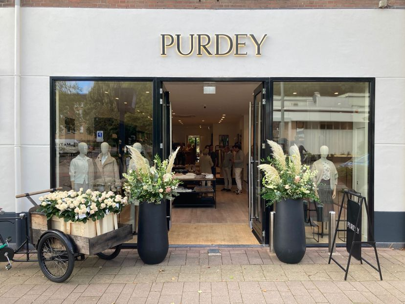

Nieuw · winkel 30
Purdey Oisterwijk
Dorpsstraat 18 · 5061 HK
Reguliere opening
Ma 12:00–18:00 · di–vr 10:00–18:00 · za 10:00–17:00
Nu 30 winkels
Bekijk de sfeer, openingstijden en bereikbaarheid vóór u vertrekt. Zo weet u precies waar u welkom bent.

Geen anonieme pin op de kaart, maar een eerste indruk van de winkel waar u naartoe gaat — met de informatie die een bezoek makkelijk maakt.
Nieuw · winkel 30
Dorpsstraat 18 · 5061 HK
Reguliere opening
Ma 12:00–18:00 · di–vr 10:00–18:00 · za 10:00–17:00

Eigen winkelbeeld
Utrechtseweg 182–184 · 6862 AV
Reguliere opening
Ma 13:00–17:00 · di 10:00–17:00 · wo–za 10:00–17:30
In productie krijgt iedere locatie een eigen beeld en winkelpagina. Bekijk nu de huidige volledige winkelzoeker.
Bekijk alle winkelsDeze twee pagina's bewijzen de template. De onderstaande 30 plaatsen zijn de productie-uitrol — niet dertig fictief uitgewerkte demo's.
Conceptpilot met actuele publieke winkelgegevens (2 augustus 2026). Voor productie: alle 30 locatiebeelden en openingstijden vanuit één beheerde bron voeden.